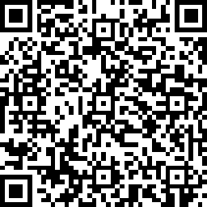

快速指南
配置文件
Shadowsocks接受这样的JSON格式配置：
{
"server":"my_server_ip",
"server_port":8388,
"local_port":1080,
"password":"barfoo!",
"timeout":600,
"method":"chacha20-ietf-poly1305"
}
"server":"my_server_ip",
"server_port":8388,
"local_port":1080,
"password":"barfoo!",
"timeout":600,
"method":"chacha20-ietf-poly1305"
}
每个字段的说明：
- server：您的主机名或服务器IP（IPv4 / IPv6）。
- server_port：服务器端口号。
- local_port：本地端口号。
- password：用于加密传输的密码。
- timeout：连接超时（秒）。
- method：加密方式
加密方式
最强的选择是AEAD密码。推荐的选择是“chacha20-ietf-poly1305”或“aes-256-gcm”。
实现其他流密码，但不提供完整性和真实性。除非另有说明，加密方式默认为“表”，这是不安全的。
URI和QR码
用于Android / iOS的Shadowsocks也接受BASE64编码的URI格式配置：
ss://BASE64-ENCODED-STRING-WITHOUT-PADDING#TAG
纯URI应该在哪里：
ss://method:password@hostname:port
例如，我们有一个192.168.100.1:8888使用bf-cfb加密方法和密码的服务器test。然后，使用普通URI
ss://bf-cfb:test@192.168.100.1:8888，我们可以生成BASE64编码的URI：
ss://YmYtY2ZiOnRlc3RAMTkyLjE2OC4xMDAuMTo4ODg4Cg
为了帮助组织和识别这些URI，您可以在BASE64编码的字符串后附加一个标签：
ss://YmYtY2ZiOnRlc3RAMTkyLjE2OC4xMDAuMTo4ODg4Cg#example-server
该URI也可以编码为QR码。然后，只需使用Android / iOS设备进行扫描即可：
亲自试试
URI:
ss://bf-cfb:test@192.168.100.1:8888
编码:
ss://YmYtY2ZiOnRlc3RAMTkyLjE2OC4xMDAuMTo4ODg4#example-server
